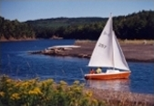

Download as PDF
Download as PDFProperty Information
We have three main categories of sites at Rockcliffe By-the-Sea, Ocean Front Lots, Ocean View Lots, and Tidal River Lots. Others lots include, Reserved Ocean View Lots and Reserved Tidal River Lots for future marketing.
Ocean Front Lots
The Ocean Front Lots are large, from 2 to 3 acres, each with at least 175 feet frontage on the ocean. The elevation is a minimum 100 feet above sea-level providing the great panoramic view of the sea and the islands. These lots are limited in number and have generated the greatest demand.
Ocean View Lots
Ocean View Lots, taking advantage of the natural terrain, are positioned two and three tiers back from the ocean. These are at elevations from 150 to 350 feet above sea level. Most have the same panoramic view of the sea and the islands as the Ocean Fronts Lots. These range in size from 2 to 3 acres, 250 feet wide and will share common designated beach access trails. Ocean View lots offer excellent value with many of the same advantages as the Ocean Front Lots.
Tidal River Lots
The Tidal River Lots, offering a ringside seat as the Mighty Bay of Fundy tides swell a small fresh water stream into a 200ft wide salt water river twice daily. These lots range in size from 1.2 to 2.7 acres and will share common designated beach access trails.
Easy to Purchase
Flexible financing arrangements are available and a refundable deposit will hold the lot of your choice for a period of time. We’d love to discuss the details!
Call us toll free 1-800-668-4337!
Let Rockcliffe By-the-Sea be a part of your future!
P.S. Please call if you need help with your travel arrangements or accommodations in Nova Scotia!